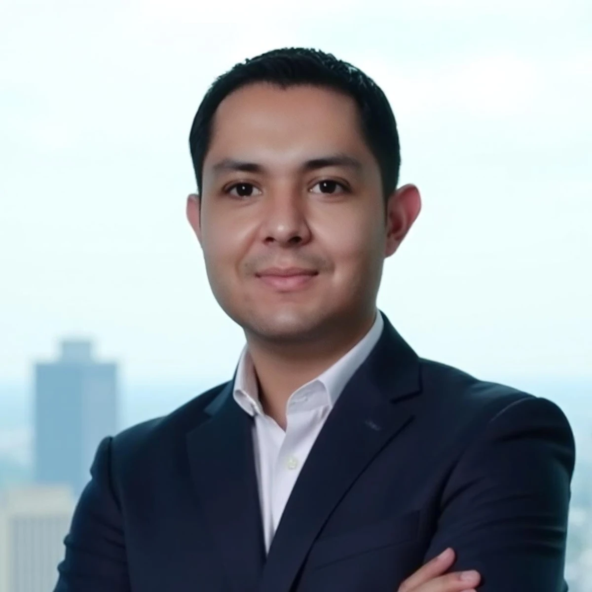

La innovación comienza con una pregunta.
¿Cómo convertimos las ideas en cambios que realmente generen valor? Esa pregunta guía mi trabajo y mi forma de entender la innovación.

Innovación con propósito
Las ideas necesitan un camino para convertirse en valor.
Me interesa comprender cómo las organizaciones pueden transformar la innovación en una capacidad que se sostenga en el tiempo.
A lo largo de mi experiencia he observado que las buenas ideas necesitan algo más que entusiasmo: necesitan dirección, espacios para experimentar, decisiones informadas y seguimiento. Mi trabajo se centra en conectar esos elementos con las personas que hacen posible el cambio.
Desde la innovación corporativa, la mejora continua y la gestión de proyectos, busco unir pensamiento estratégico y ejecución para que las iniciativas avancen con propósito.
Comprender
Escuchar a las personas y entender el contexto y los procesos antes de elegir una solución.
Conectar
Alinear ideas, capacidades y prioridades para que la innovación responda a una estrategia.
Construir
Dar estructura a las iniciativas, aprender en el camino y observar sus resultados.
Una innovación que forma parte de la organización.
Para que la innovación trascienda los esfuerzos aislados, propongo comprenderla a través de tres ejes conectados: cultura, planeación e indicadores. Juntos ayudan a crear las condiciones para que las ideas se conviertan en iniciativas y sus resultados puedan aprenderse y sostenerse.
Cultura
Promover la participación, la colaboración y el aprendizaje para que las personas puedan proponer, experimentar y construir nuevas soluciones.
Planeación
Conectar las oportunidades con la estrategia, establecer prioridades y definir cómo avanzar de las ideas hacia iniciativas viables.
Indicadores
Dar seguimiento a las iniciativas y medir sus resultados para comprender el valor generado y orientar decisiones de mejora.
Ideas que se encuentran en la práctica.
Innovación como capacidad
Explorar cómo la cultura, la planeación y los indicadores ayudan a dar continuidad a la innovación dentro de las organizaciones.
Tecnología con sentido
Entender el proceso y el problema antes de aplicar herramientas digitales o inteligencia artificial.
Aprendizaje y colaboración
Escuchar distintas visiones, cuestionar supuestos y aprender de la experiencia para tomar mejores decisiones.
Una visión que conecta estrategia y ejecución.
Actualmente me desempeño como analista de innovación en Grupo Aeroportuario del Pacífico. Mi trayectoria integra innovación corporativa, mejora continua y gestión de proyectos, con un interés particular en conectar las ideas con las personas, los procesos y los resultados.
He desarrollado experiencia en los sectores público y privado, así como en distintas industrias. Esta diversidad me ha permitido conocer diferentes formas de organización y entender la importancia de adaptar las estrategias de innovación a las personas y al contexto de cada organización.
Estudié Relaciones Internacionales en la Universidad de Guadalajara, donde también cursé la especialidad en Estudios Europeos y la maestría en Desarrollo y Dirección de la Innovación. Cuento con certificaciones como Lean Six Sigma Black Belt y CAPM®, además de distintos cursos en innovación, inteligencia artificial, mejora de procesos y transformación digital.
Escribir también es
una forma de explorar.
La escritura me permite explorar preguntas sobre innovación y tecnología, y también observar la política y la sociedad desde una visión crítica.
El circo del poder
Una visión circense de la política contemporánea
Una visión de la política y sus dinámicas de poder a través de la metáfora del circo, para reflexionar sobre las decisiones que influyen en nuestra vida colectiva.
Ver libro en Amazon ↗La Cascada
Mis columnas de opinión en Cascada Noticias exploran la política, la participación ciudadana y las decisiones que afectan a nuestra comunidad.
Ver todas mis columnas en Cascada Noticias ↗Publicaciones en LinkedIn
ISO 56002: Innovar no es tener ideas, es gestionar la innovación
Una visión de la innovación como capacidad organizacional que se diseña y se gestiona.
Leer en LinkedIn ↗ESTRATEGIA · 1 OCT 2025La innovación no es un lujo: es una necesidad estratégica
Por qué innovar va más allá de la tecnología y se relaciona con la capacidad de adaptación.
Leer en LinkedIn ↗CULTURA · 28 JUN 2025La innovación en las organizaciones tradicionales
Una reflexión sobre los desafíos de impulsar el cambio en estructuras consolidadas.
Leer en LinkedIn ↗Las buenas preguntas
merecen compartirse.
Si te interesa conversar sobre innovación, estrategia o tecnología, conectemos.